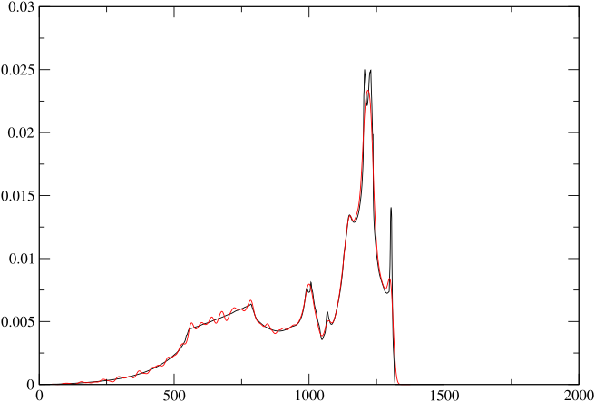

Running-phonon-calculations
CASTEP contains implementations of several methods for computing the electronic response orbitals and the dynamical matrix (Refson, Tulip, and Clark 2006). There are implementation restrictions and the choice of the most suitable one depends on the type of calculation, the Hamiltonian, and the property calculations required. See table [captable] for details. For straightforward semi-local DFT calculations (LDA, PBE etc.) the density-functional perturbation theory method (DFPT) method is preferred (section [dfpt-gamma]), as this is not only the most efficient, but also allows the calculation of infra red and Raman intensities for modelling of spectra. DFPT is not yet implemented for ultrasoft pseudopotentials, or for Hubbard U or some dispersion-corrected DFT methods (as of release 24.1), and in these cases the finite displacement method should be used (section [fd]). If a density of states or finely sampled dispersion curve along high symmetry directions is needed, then either the DFPT method with Fourier interpolation (section [ddos]) is the most suitable or the finite-displacement supercell (section [supercell]; if ultrasoft pseudopotentials are required). A summary of the recommended approach for various property calculations is given in table [method-selection].
| DFPT (Phonon) | DFPT (E-field) | FD (Phonon) | |
|---|---|---|---|
| USP | ✘ | ✘ | ✓ |
| NCP | ✓ | ✓ | ✓ |
| LDA, GGA | ✓ | ✓ | ✓ |
| MGGA | ✘ | ✘ | ✓ |
| DFT+U | ✘ | ✘ | ✓ |
| NCM/SOC | ✘ | ✘ | ✓ |
| PBE0, Hybrid XC | ✘ | ✘ | ✓ |
| DFT+D: TS, D2 | ✓ | ✓ | ✓ |
| DFT+D: D3,D4, MBD*,XDM | ✘ | ✓ | ✓ |
- Table 1: CASTEP phonons implementation matrix. In general DFPT is avalable for semilocal DFPT, but not other Hamiltonians. The combination of DFPT and USPs is not implemented.
| Target Property | Preferred method |
|---|---|
| IR spectrum | DFPT at q=0 with NCP potentials (section. [dfpt-gamma]) |
| FD at q=0 with NCP potentials and DFPT e-field (section. [fd]) | |
| FD at q=0 with USP potentials and Berry Phase Z^{*} (section. [berry-fd]) | |
| Raman spectrum | DFPT at q=0 with NCP potentials (2n+1 theorem) (section. [raman]) |
| Born Effective Charges (Z^{*}) | DFPT E-field using NCP potentials (section. [efield]) |
| FD at q=0 with USP potentials and Berry Phase Z^{*} (section. [berry-fd]) | |
| Dielectric Permittivity (\epsilon_\infty) | DFPT E-field using NCP potentials (section. [efield]) |
| Nonlinear optical susceptibility (\chi^{(2)}) | DFPT E-field (2n+1 theorem) using NCP potentials (section. [nlo]) |
| Phonon dispersion or DOS | DFPT plus interpolation with NCP potentials (section. [ddos]) |
| FD plus interpolation using USP or NCP potentials (section. [ndsc]) | |
| FD with supercell using USP or NCP potentials (section. [supercell]) | |
| Vibrational Thermodynamics | same as DOS (section. [thermodynamics]) |
- Table 2: Available and recommended methods for different property
calculations.
A DFPT phonon calculation at the \Gamma-point
Many of the principles of setting up and running phonon calculations can be illustrated in the simplest case - computing phonon frequencies at the q=(0,0,0), often referred to as the \Gamma point. This is a very common calculation, as it forms the basis of modelling of infra-red or Raman spectra and group theoretical analysis and assignment of the modes.
Input files
The setup for a CASTEP phonon calculation requires a few additional
keywords in the seedname.cell file. Like any type of calculation,
the unit cell must be specified using either of %block LATTICE_ABC or
%block LATTICE_CART, and the atomic co-ordinates using
%block POSITIONS_FRAC or %block POSITIONS_ABS. Figure
[example-gamma] shows a complete input file
for a calculation on boron nitride in the hexagonal Wurtzite structure.
The additional keywords. phonon_kpoint_list is used to specify that a
single phonon wavevector (0,0,0) is to be computed1. More wavevectors
could be specified using additional lines in this block.2
%block LATTICE_ABC
2.536000 2.536000 4.199000 ! a, b, c
90.000000 90.000000 120.000000 ! alpha, beta, gamma
%endblock LATTICE_ABC
%block POSITIONS_FRAC
B 2/3 1/3 0.000000 ! Atom co-ordinates in crystallographic
N 2/3 1/3 0.374536 ! fractional system.
B 1/3 2/3 0.500000
N 1/3 2/3 0.874536
%endblock POSITIONS_FRAC
%block SPECIES_POT
B B_00.recpot ! File names of pseudopotential to use for B
N N_00.recpot
%endblock SPECIES_POT
kpoints_mp_spacing 0.07 ! Generate MP grid of electronic k-points.
symmetry_generate ! Find symmetry operations of crystal structure
%block PHONON_KPOINT_LIST
0.0 0.0 0.0 1.0 ! Wavevector of phonon(s) to compute ( qx qy qz, weight)
%endblock PHONON_KPOINT_LIST
task : PHONON ! Choose a phonon calculation xc_functional : LDA opt_strategy : SPEED ! Optimise for speed over memory saving cut_off_energy : 700.0 eV ! Plane-wave cutoff for this system elec_method : DM ! Use fast DM solver even for insulating system phonon_sum_rule : TRUE ! Enforce acoustic sum rule on calculated D-
Figure 1: Annotated example cell and parameter files for BN in the Wurtzite structure. Note that
phonon_methoddefaults toDFPT.
Reading the output
Figure [example-gamma-out] shows part of
the phonon-relevant output extracted from the .castep file obtained by
running the input files of the previous section. There are several
blocks of output, one per direction chosen for
{\mathbf{q}}\rightarrow 0 in the LO-TO splitting terms. Note that
CASTEP has added a calculation without LO-TO splitting (the first
block), even though this was not explicitly requested. Within each block
frequencies are listed one per line. Also on the line are (a) a label
indicating the irreducible representation of the mode from a group
theory analysis, (b) the computed absorptivity of the mode in a powder
(or otherwise orientationally averaged) infrared experiment, © whether
the mode is IR active, (d) the Raman activity (if computed) and (e)
whether the mode is Raman active.
============================================================================== + Vibrational Frequencies + + ----------------------- + + + + Performing frequency calculation at 1 wavevector (q-pt ) + + ========================================================================== + + + + -------------------------------------------------------------------------- + + q-pt= 1 ( 0.000000 0.000000 0.000000) 1.0000000000 + + -------------------------------------------------------------------------- + + Acoustic sum rule correction < 8.094974 cm-1 applied + + N Frequency irrep. ir intensity active raman active + + (cm-1) ((D/A)**2/amu) + + + + 1 -0.049170 a 0.0000000 N N + + 2 -0.034768 b 0.0000000 N N + + 3 -0.034768 b 0.0000000 N N + + 4 475.116083 c 0.0000000 N Y + + 5 475.116083 c 0.0000000 N Y + + 6 952.000075 c 0.0000000 N Y + + 7 952.000075 c 0.0000000 N Y + + 8 963.032787 d 0.0000000 N N + + 9 1016.312039 a 28.5895083 Y Y + + 10 1051.124801 b 25.8079204 Y Y + + 11 1051.124801 b 25.8079204 Y Y + + 12 1123.472590 d 0.0000000 N N + + .......................................................................... + + Character table from group theory analysis of eigenvectors + + Point Group = 25, C6v + + .......................................................................... + + Rep Mul | E 6 3 2 m_v m_v + + | ------------------------ + + a A1 2 | 1 1 1 1 1 1 + + b E1 2 | 2 1 -1 -2 0 0 + + c E2 2 | 2 -1 -1 2 0 0 + + d B1 2 | 1 -1 1 -1 -1 1 +-
Figure 2 Output in the .castep file generated by the preceding input files for wurtzite BN. The columns show the mode frequencies, a letter labelling of the irreducible representation of the mode, the infrared absorptivity and Raman activity, and whether or not the mode is Raman and/or IR active. Not all of these are present in every calculation depending on the use of symmetry and input options.
+ -------------------------------------------------------------------------- +
+ q-pt= 1 ( 0.000000 0.000000 0.000000) 0.0000000000 +
+ q->0 along ( 0.000000 0.000000 1.000000) +
+ -------------------------------------------------------------------------- +
+ Acoustic sum rule correction < 8.094974 cm-1 applied +
+ N Frequency irrep. ir intensity active raman active +
+ (cm-1) ((D/A)**2/amu) +
+ +
+ 1 -0.037851 a 0.0000000 N N +
+ 2 -0.034768 b 0.0000000 N N +
+ 3 -0.034768 b 0.0000000 N N +
+ 4 475.116083 c 0.0000000 N Y +
+ 5 475.116083 c 0.0000000 N Y +
+ 6 952.000075 c 0.0000000 N Y +
+ 7 952.000075 c 0.0000000 N Y +
+ 8 963.032787 d 0.0000000 N N +
+ 9 1051.124801 b 25.8079204 Y Y +
+ 10 1051.124801 b 25.8079204 Y Y +
+ 11 1123.472590 d 0.0000000 N N +
+ 12 1262.933291 a 28.5895083 Y Y +
+ .......................................................................... +
+ Character table from group theory analysis of eigenvectors +
+ Point Group = 25, C6v +
+ (Due to LO/TO splitting this character table may not contain some symmetry +
+ operations of the full crystallographic point group. Additional +
+ representations may be also be present corresponding to split LO modes. +
+ A conventional analysis can be generated by specifying an additional null +
+ (all zero) field direction or one along any unique crystallographic axis +
+ in %BLOCK PHONON_GAMMA_DIRECTIONS in <seedname>.cell.) +
+ .......................................................................... +
+ Rep Mul | E 6 3 2 m_v m_v +
+ | ------------------------ +
+ a A1 2 | 1 1 1 1 1 1 +
+ b E1 2 | 2 1 -1 -2 0 0 +
+ c E2 2 | 2 -1 -1 2 0 0 +
+ d B1 2 | 1 -1 1 -1 -1 1 +
==============================================================================
Figure 2 Run output (continued): If the LO-TO-splitting calculation is active the
\Gamma point frequency table is repeated, both without and including
the non-analytic contribution which generates the LO/TO splitting in one
or more directions (See Gonze and Lee (Gonze and Lee
1997)). (The group theory analysis for LO modes is less
useful than might be wanted and is likely to be the subject of future
developments.)
As with other calculations the amount of information written to the
.castep file is controlled by the value of the parameter iprint. The
levels of output are
iprint : 0-
Minimal output as in figure [example-gamma-out]. No progress info.
iprint : 1-
As for
iprint : 0but including a reassuring progress report of q-points and perturbations. iprint : 2-
More detailed output including details of k-points and symmetry for each perturbation, cycle-by cycle DFPT minimiser report, printing of dynamical matrices (and force constant matrices).
In addition to the user-readable output in the .castep file3, every
phonon calculation generates an additional output file with the suffix
.phonon which is intended for postprocessing analysis by other
programs. This includes not only the frequencies but also the
eigenvectors {\mathbf{\varepsilon}_{m{\kappa,\alpha}{\mathbf{q}}}}
resulting from diagonalising the dynamical matrix. These eigenvectors
are orthonormal and the relationship between the eigenvectors and atomic
displacements is given by
where Q_M is the amplitude of mode m and the other notation is as set out in the introduction.
Raman activity calculations
In addition to the infrared absorptivity computed as a default part of a \Gamma-point phonon calculation, CASTEP is also capable of computing the Raman activity tensors in the case of non-resonant scattering for an insulating system4. This calculation uses an extension of DFPT known as the “2n+1 theorem” (Baroni et al. 2001; Miwa 2011) which requires substantially more computational effort than a bare phonon calculation and is therefore not enabled by default. To compute Raman activity set
calculate_raman : TRUE
in the .param file, which calculates and prints the Raman atomic
susceptibility tensors and the mode susceptibility tensors to the
.castep file. These may be extracted for use when modelling the Raman
scattering in a polarised single-crystal geometry.5
As with the Born effective charges and dynamical matrices, there is a sum rule on the values of the atomic polar tensors, which may not be well satisfied because of numerical approximations. A correction will be applied if parameter
raman_sum_rule : TRUE
is set.
A 3d-average Raman activity (see Porezag and Pedersen (Porezag and Pederson 1996)) is computed from the susceptibility tensors and printed as an additional column in the usual frequency output given in figure [example-gamma-out]. This may be used for simple modelling of a powder spectrum, for example using the dos.pl tool (see section [dos-pl]).
Dispersion and density of states
Phonons of a nonzero wavevector play an important role in the thermophysical properties of crystalline solids and the physics of many solid-state phase transitions. Proving the mechanical stability of a crystal structure by testing for real frequencies requires a vibrational calculation over the full Brillouin Zone. And dispersion curves and densities of states are frequently required for comparison with inelastic neutron and X-ray scattering experiments.
One of the benefits of density functional perturbation theory is that
CASTEP can calculate vibrational modes at {\mathbf{q}}\ne \mathbf{0}
as easily as at {\mathbf{q}}= \mathbf{0} (but at the cost of an
increase in CPU time due to the decreased symmetry). It is possible to
perform this calculation simply by providing a list of q-points in the
.cell file ( using one of the blocks %block PHONON_KPOINT_LIST, or
%block PHONON_KPOINT_PATH or keyword phonon_kpoint_mp_grid). However
to generate a reasonable quality dispersion plot or density of states
will usually require hundreds or thousands of q-points. The time
required by such a calculation would be several hundred times that for a
single-point energy and therefore infeasibly large.
Fortunately there is a way to achieve the same result at a far smaller computational cost. This method exploits the fact that the interatomic interactions in a solid have a finite range and decay rapidly to zero. Specifically, the elements of the force constant matrix in Eq. [fcmat] decrease as 1 / r^{5} with interatomic distance. Consequently the dynamical matrix defined by Eq. [dmat] and its eigenvalues \omega^{2}({\mathbf{q}}) are smoothly varying with wavevector {\mathbf{q}}. Fourier interpolation is used to generate dynamical matrices on an arbitrarily fine grid or linear path in reciprocal space from a set of DFPT calculations on a much coarser grid. For a full description of the method see references (Baroni et al. 2001; Giannozzi et al. 1991; Gonze and Lee 1997).
A complication arises in the case of polar solids where the dipole-dipole interaction generated upon displacing an atom leads to a longer ranged force constant matrix which decays only as 1 / r^{3}. CASTEP models this term analytically using Born effective charges and dielectric permittivity calculated using an electric field response DFPT calculation (see section [efield] and Ref. (Gonze and Lee 1997)). It is therefore able to perform the Fourier interpolation for only the part of the force constant matrix which varies as 1 / r^{5}, and does not require a finer grid than in the case of non-polar solids.
Setting up an interpolation calculation
In the .cell file choose the q-points of the coarse grid of points at
which to perform DFPT calculations. This may be specified as a
%block PHONON_KPOINT_LIST containing the reduced set of points in the
irreducible Brillouin Zone, but is is almost always more straightforward
to use the alternative keywords
phonon_kpoint_mp_grid: p q r
phonon_kpoint_mp_offset:INCLUDE_GAMMA
to specify the grid parameters and offset6. The grid parameters p, q and r should normally be chosen to give a roughly uniform sampling of reciprocal space taking length of the reciprocal lattice vectors into account, and should be compatible with the symmetry of the simulation cell. Alternatively a grid may be specified using the minimum spacing, for example
phonon_kpoint_mp_grid_spacing 0.1 1/ang
Normally the grid should be chosen to contain the \Gamma point, which
usually gives better convergence properties of the interpolation
(i.e.*convergence at smaller *p,q,r) than otherwise. This is the
opposite behaviour to electronic k-point sampling (see Ref. (Probert
and Payne 2003)). The special keyword value
phonon_kpoint_mp_offset : INCLUDE_GAMMA avoids the need to work out
the offset explicitly.
The choice of grid parameters p, q and r is governed by three considerations:
-
For a 3-dimensional crystal, p,q,r should obey the crystallographic symmetry, so for a cubic or rhombohedral crystal you should set p = q = r. In the case of a uniaxial crystal, such as tetragonal or hexagonal we have p = q \neq r (assuming that c is the unique axis) and for lower symmetry there is no constraint.
-
The value in any of the directions limits the range of the force constant matrix in much the same way as the supercell multiplier does in a finite-difference/supercell calculation (Section [supercell]). Exactly how large this should be depends on the nature of the chemical bonding. Ionically bonded systems tend to have fairly short-ranged force-constant matrices and need relatively coarse grids for convergence. For sodium chloride in the rocksalt structure with a primitive lattice parameter 3.75Å a 4 \times 4 \times 4 grid is reasonably close to convergence. This corresponds to a truncation of the force constant matrix at a distance of approximately 7Å (\approx p \times 2 \pi / a). On the other hand covalent systems tend to have fairly long-ranged force-constant matrices and need finer grids for convergence. Silicon is a good example of this. The primitive lattice parameter is similar to sodium chloride at 3.81Å, but the dispersion curve is not fully converged until an 8 \times 8 \times 8 grid is used. A more detailed examination of this point may be found in reference (Ackland, Warren, and Clark 1997).
-
While there is no essential physics relationship between the grid sizes for phonon {\mathbf{q}}-points and that required for electronic {\mathbf{k}}-point sampling 7, there is a technical connection resulting from the implementation of density-functional perturbation theory and the requirement to generate and use ground-state Kohn-Sham wavefunctions on grids containing both \{{\mathbf{k}}\} and \{{\mathbf{k}}+ {\mathbf{q}}\} (See ref. (Gonze 1997) for the mathematical details). For best performance and stability of the DFPT calculation the phonon grid parameters should be commensurate with the electronic grid with an exact divisor as the simplest case. For example, in an elemental metal with an hcp structure such as Mg, an electronic {\mathbf{k}}-point sampling of 21 \times 21 \times 12 and a phonon {\mathbf{q}}-point sampling of 7 \times 7 \times 6 might be most effective. This is not a hard requirement and CASTEP will attempt to work with whatever grids are specified, but in some cases there may be a performance advantage to rounding up one or other of the grids to meet the commensurability criterion.
Additional keywords in the .param file control the interpolation. Most
importantly
phonon_fine_method : INTERPOLATE
instructs CASTEP to perform the Fourier interpolation step following the usual DFPT calculation.
The target set of wavevectors for the interpolation is set up using additional keywords or blocks in the .cell file. Either
phonon_fine_kpoint_mp_gridp q r
phonon_fine_kpoint_mp_offseto_1 o_2 o_3
or
phonon_fine_kpoint_mp_spacing 0.03 1/ang.
will perform interpolation onto a regular (possibly offset) grid. In fact only the points in the irreducible wedge of the Brillouin Zone are included, and a suitable weight is computed so that the weighted average is identical to a uniform sampling of the BZ. This is the usual method for computing a phonon density of states.
If a set of dispersion curves along high symmetry directions is required, an empty cell keyword block
%block PHONON_FINE_KPOINT_PATH
%endblock PHONON_FINE_KPOINT_PATH
will internally generate a list of {\mathbf{q}}-points sampling a default path through the Brillouin-Zone according to the symmetry of the calculation. Alternatively a list of {\mathbf{q}}-points explicitly specifying the vertices of the path may be input as
which traverses the directions between the vertices specified, except in
the presence of the break keyword where the path jumps without
including any intermediate points. The fineness of sampling along the
path is set by an additional keyword
phonon_fine_kpoint_path_spacing : 0.03 1/ang.
As a final alternative, a simple list of points can be directly input to model any sampling you choose using
This is the approach used for files generated by Accelrys Materials Studio.
The same keywords are used in the closely related method of a finite
difference calculation; see the example .cell file of
figure [al-sc-cell].
Continuation
CASTEP stores the results of all phonon calculations - dynamical
matrices and force constant matrices - in the binary seedname.check
file written at the end of a successful run. This can be used to change
some values of parameters relating to interpolation, and to change or
indeed replace the entire fine phonon k-point set without any need to
repeat the expensive DFPT (or supercell) part of the calculation. In
fact a single calculation of the force constant matrix is sufficient to
compute a DOS at a variety of sampling densities plus arbitrarily smooth
dispersion curves.
Setting up a continuation calculation is simple. Just add the continuation keyword in the usual way to a renamed copy of the param file
continuationorig-seedname.check
and make any changes to the fine phonon k-point sampling parameters in a
copy of the seedname.cell file. It is recommended that you work with
renamed copies to avoid overwriting the original and valuable
seedname.check file. Running CASTEP on the new set of input files is
exactly the same as running a new calculation, except that the result
will be generated much more quickly.
When setting up a continuation run, take care not to change the standard
phonon k-point set, the electronic k-point set or any electronic
structure parameters such as elec_energy_tol. If a mismatch is
detected with the values stored in the checkpoint file, CASTEP will
discard the saved dynamical matrix data and restart the full calculation
from the beginning.
Continuation calculations are also used in conjunction with
checkpointing where a partially complete calculation is written to a
file, also in .check format and which may be used to restart an
interrupted calculation. See
section [checkpointing] for a description.
Control of interpolation scheme
The final representation of the force constant matrix derived from the dynamical matrices is actually a periodic representation and is equivalent to the {\mathbf{q}}=0 dynamical matrix of a (fictitious) p \times q \times r supercell. (See section [supercell] for more explanation.) CASTEP must determine a mapping between elements of the periodic dynamical matrix and aperiodic force constant matrix using a minimum-image convention for ionic site pairs and impose a cutoff scheme in real space to exclude (supercell-) periodic images. In fact CASTEP implements two distinct schemes.
The cumulant scheme (Parlinski, Li, and Kawazoe 1997) includes all image force constants with a suitable weighting to avoid multiple counting of images. This is achieved by including image force constants in any direction if they lie within half the distance to the nearest periodic repeat of the fictitious supercell lattice in that direction. If an atom-atom pair vector lies exactly half way to the supercell repeat so that image force constants occur, for example, at both \mathbf{L} and -\mathbf{L}, all images at the same distance are included with a suitable weighting factor to preserve the symmetry of the cumulant force constant matrix. (See Refs. (Parlinski, Li, and Kawazoe 1997) and (Ye et al. 2004) for a more detailed explanation). This scheme is selected by specifying the param file keyword
phonon_fine_cutoff_method CUMULANT
and is in fact the default method in CASTEP.
CASTEP also implements a simple spherical cutoff, controlled by the parameter R_c and specified by parameter
phonon_force_constant_cutoff 10.0 ang
The value R_c should be chosen to satisfy 2 R_c < min(p L_1,q L_2,r L_3) L where L_n is the cell edge of the simulation cell and p,q,r are the (coarse) grid of phonon wavevectors. It is usually easiest to specify a value of zero, in which case CASTEP chooses the largest allowable value automatically. This scheme is most suitable for bulk materials of cubic symmetry. The spherical scheme is chosen using keyword
phonon_fine_cutoff_method SPHERICAL.
Within the default method a smaller cutoff volume can be decreased by a radius scaling factor, e.g.
phonon_force_constant_cut_scale : 1.0.
This may be useful for testing the effect of long-ranged contributions to the IFC matrix. However any departure of this parameter’s value from 1 does not preserve the superior convergence properties of the cumulant scheme and will in general require a larger supercell than the exact cumulant method.
Acoustic Sum Rule correction
The vibrational Hamiltonian is invariant to a uniform translation of the
system in space. This symmetry is the origin of the well-known result
that any crystal has three acoustic vibrational modes at
{\mathbf{q}}=0 with a frequency of zero. This leads to the so-called
acoustic sum rule (or ASR) (Ackland, Warren, and Clark
1997; Pick, Cohen, and Martin 1970)
which has mathematical expressions for the force constant and
\Gamma-point dynamical matrices
In plane-wave calculations the translational invariance is broken as
atoms translate with respect to the fixed FFT grid, so the sum rule is
never exactly satisfied. Consequently it is sometimes observed even in
an otherwise apparently very well converged calculation that the three
acoustic modes at \Gamma depart significantly from zero frequency.
Depending on the XC functional8 these frequencies may reach or
exceed 50 cm^{\text{-1}}. One solution is simply to increase number of
grid points of CASTEP’s “fine” FFT grid used for densities and
potentials by increasing fine_grid_scale9. (N. B. This is distinct
from grid_scale which controls the FFT grid used to represent
wavefunctions.) However this can be very costly in computer time and
memory.
Provided that the amplitude of the symmetry violation is not too large,
it is possible to apply a transformation to the computed dynamical or
force constant matrix so that it exactly satisfies the ASR. CASTEP
implements a scheme which projects out the acoustic mode eigenvectors
and adjusts their frequency to zero, while having minimal impact on the
optic mode frequencies. This scheme is controlled by parameters (in the
.param file)
phonon_sum_rule_method : REAL / RECIP / REAL-RECIP / NONE
The first of these simply activates or deactivates the correction. The
second chooses which of the variants of the ASR in
equation [asr] to enforce, the real-space force constant
matrix, the reciprocal-space dynamical matrix, or both.
(phonon_sum_rule_method : NONE is a synonym for
phonon_sum_rule : FALSE). The real-space method is only applicable to
interpolation or supercell/finite displacement calculations, but the
reciprocal-space method can be used for any type of phonon calculation.
Both variants change the acoustic mode frequencies away from but near {\mathbf{q}}=0, the realspace method implicitly, and the reciprocal space method explicitly, by determining the correction to {D^{\kappa,\kappa^\prime}_{\alpha,\alpha^\prime}(\mathbf{q}=0)} and subtracting it from {D^{\kappa,\kappa^\prime}_{\alpha,\alpha^\prime}(\mathbf{q})} as suggested by Gonze (Gonze and Lee 1997). This usually results in acoustic mode behaviour which is indistinguishable from a very well converged calculation using a very fine FFT grid10.
In addition to the sum rule on frequencies there is another for the Born effective charges (see section [efield])
which is activated by parameter
born_charge_sum_rule : TRUE
The default behaviour of CASTEP is that neither sum rule is enforced. If this was not requested in the original run, then it may be added in post-processing fashion in a continuation run, as per section [continuation]. Only the raw dynamical and/or force constant matrices are stored in the checkpoint file without the effect of ASR enforcement, which is only applied at the printout stage. Therefore the effect can be turned off, or altered by a post-processing calculation as well as turned on.
Density of States
The definition of the phonon density of states requires an integration
of the calculated frequencies \omega_{i{\mathbf{q}}} over the
Brillouin-Zone
A simple computational approximation would be to compute
\omega_{i{\mathbf{q}}} on a regular, discrete grid of {\mathbf{q}},
replace the integral with a sum over the grid and convolute the result
with some peak shape function h(\omega) such as a Gaussian
In the CASTEP toolset, this is implemented by performing a Fourier
interpolation calculation onto a suitably fine {\mathbf{q}}-point set,
specifying either phonon_fine_kpoint_mp_grid or
phonon_fine_kpoint_mp_spacing. The resulting .phonon file may then
be analysed using the dos.pl tool (see
section [dos-pl]) which implements
equation [broadendos].
However the broadening smooths out any sharp features of the DOS, and fails to reproduce the smoothly-curved or sharply peaked segments typical of theoretical densities-of-states. This is discussed in more detail in references (Yates et al. 2007) and (Pickard 1997). A more faithful rendering may be obtained using the so-called adaptive broadening approach of Yates et. al (Yates et al. 2007) which uses the gradients of the phonon branch dispersion to narrow or widen the broadening for flat or steep branches respectively. It is activated by the parameters keyword
phonon_calculate_dos : TRUE
which computes an adaptively-broadened DOS during the Fourier
interpolation stage of the calculation and writes an output file named
<seedname>.phonon_dos containing the tabulated DOS, plus the
per-atomic-species resolved DOS in additional columns. The dos.pl
script is able to read and present .phonon_dos files just as with
.phonon.
The range and resolution may be modified using additional parameters, for example
phonon_dos_spacing : 0.01 THz
phonon_dos_limit : 10.0 THz
Example output for the phonons of diamond is shown in figure [c2-pdos].
- 
-
Figure 3 Phonon DOS for Diamond, with an 18^3 fine grid comparing Gaussian broadened (red) vs adaptively broadened (black) methods. Artefactual wiggles are clearly visible in the Gaussian-broadened case, and the height of the sharp peaks is not well reproduced.
Finite Displacement
In addition to the DFPT method of computing force constants, CASTEP implements schemes based on numerical differentiation of forces when atoms are displaced by a small amount from their equilibrium positions. This method is useful for cases where DFPT has not been implemented, which as of CASTEP release 24.1 includes ultrasoft pseudopotentials, Hubbard U and exact exchange and hybrid functionals, and some of the newer classes of dispersion correction.
There are three variants of this scheme.
Primitive Cell Finite Displacement
The basic finite displacement method is selected by setting parameter
phonon_method : FINITEDISPLACEMENT
In contrast to DFPT such displacements are necessarily periodic with the
simulation cell, and therefore only {\mathbf{q}}=0 phonons are
commensurate with this condition. As in the case of DFPT lattice
dynamics the phonon wavevectors are specified by
%block PHONON_KPOINT_LIST, %block PHONON_KPOINT_PATH or
phonon_kpoint_mp_grid in the .cell file but only the \Gamma point,
(0,0,0) is meaningful. CASTEP will print a warning in the output file
and ignore any non-zero value in the list.
CASTEP proceeds by shifting each atom by a small amount, then performing
a SCF calculation to evaluate the forces on the perturbed configuration.
Both positive and negative displacements are performed in each direction
so that the corresponding force constants can be evaluated using the
accurate “central difference” method of numerical differentiation.
Equation [finite-diff] demonstrates that a single pair of displaced calculation yields an entire row of the dynamical matrix. As with DFPT calculations, only the minimal set of perturbations is performed and the space-group symmetry is used to build the complete dynamical matrix.
The SCF calculations on the perturbed configuration are efficient,
typically taking only only a few cycles in CASTEP 5.0 or later. This
efficiency is achieved by first making a good guess for the electron
density of the perturbed system based on the ground state of the
unperturbed system, and applying a displacement of an atomic-like
density of the pseudo-atom in question. Second, the SCF is started using
the Kohn-Sham orbitals of the unperturbed state as the initial guess for
the perturbed configuration. To exploit this efficiency it is essential
to use the density-mixing (Davidson) minimiser, selected by
elec_method : DM in the .param file. (As the all-bands method has no
means of initialising the density).
The default displacement used is 0.01 bohr This can be changed if necessary by setting a parameter,
phonon_finite_disp : 0.02 ang
in the .param file. Except for the differences discussed above, input
and output formats are the same as for DFPT calculations.
Born Charges, Permittivity and LO/TO splitting with FD
FD phonon calculations are useful where atomic-displacement response DFPT is not implemented, notably for ultrasoft pseudopotentials (USPs) and post-DFT exchange and correlation including LDA+U, SOC, hybrid functionals (see table [captable]). However properties including IR spectral intensity, LO/TO splitting and the effectiveness of Fourier interpolation of dynamical matrices depend on the Born effective charges and dielectric permittivity (see section [efield]), whose calculation by electric field response DFPT is not implemented.
In some cases it may be convenient to read in externally computed or approximate values of Born charges and permittivity to be used to calculate IR spectra, LO/TO splitting etc. For example, a DFT+U, meta-GGA, or hybrid calculation might make use of values calculated using PBE-DFPT and NCPs as a fair approximation, or even computed using a different DFT code.
This may be accomplished by specifying the name of an external file
containing the values (in this case BORN.DAT) in the .param file
The file should be formatted as for the Phonopy code (https://phonopy.github.io/phonopy/input-files.html#born-optional). A file of this format may be written at the end of a DFT, NCP E-field response calculation by
Born charges from Berry Phase Polarization
As of CASTEP release 25.1, it will be possible to calculate Born effective charges (but not dielectric permittivity) using a finite-difference numerical differentiation of the Berry-phase polarization. This is performed as an adjunct to the FD phonon calculation, and will be automatically selected in the case of an FD phonon calculation with USPs. This works for any compatible Hamiltonian, including DFT+U, mGGAs such as rSCAN as well as hybrid XC functionals.
Finite Displacement using non-diagonal supercells
As with the DFPT method, calculation of phonon dispersion and DOS using the finite displacement method is achieved using Fourier interpolation of dynamical matrixes. First, an approximation of the full force-constant-matrix {\Phi^{\kappa,\kappa^\prime}_{\alpha,\alpha^\prime}} is calculated by explicitly computing a set of {D^{\kappa,\kappa^\prime}_{\alpha,\alpha^\prime}(\mathbf{q})} with {\mathbf{q}} sampling a coarse grid of {\mathbf{q}} and using the inverse Fourier relation to equation [dmat]. Then equation [dmat] is used to generate the dynamical matrices at all of the (fine) phonon wavevectors required.
The key step of computing every {D^{\kappa,\kappa^\prime}_{\alpha,\alpha^\prime}(\mathbf{q})} on the “coarse” regular grid is achieved by constructing a list of supercells commensurate with each of the coarse {\mathbf{q}}-points in turn (so that {\mathbf{q}}\cdot T_{\text{SC}} = 2 n \pi where T_{\text{SC}} is a lattice vector of that supercell). This {\mathbf{q}} maps to a \Gamma point calculation on the corresponding supercell despite being incommensurate with the primitive cell, and {D^{\kappa,\kappa^\prime}_{\alpha,\alpha^\prime}(\mathbf{q})} for the primitive cell at {\mathbf{q}} may be extracted using equation [dmat]. It was shown by Lloyd-Williams and Monserrat (Lloyd-Williams and Monserrat 2015) that by using so-called non-diagonal supercells such a set need contain only the least common multiple of the coarse grid subdivisions (p, q, r). Consequently the number of distinct supercell calculations requires is much smaller than the number of {\mathbf{q}}-vectors of the grid, and most importantly increases with the linear dimension of the grid instead of the product.
A non-diagonal supercell calculation is selected by setting the parameters
phonon_method : FINITEDISPLACEMENT
phonon_fine_method : INTERPOLATE,
the cell keywords
phonon_kpoint_mp_grid : p q r
and one of the specifications of phonon_fine_kpoints exactly as in the
case of a DFPT calculation. When the phonon calculation begins, CASTEP
generates a list of supercells using the algorithm of Lloyd-Williams and
Monserrat (Lloyd-Williams and Monserrat 2015). For each of
these, CASTEP generates the corresponding supercell and performs a
finite-displacement phonon calculation. The dynamical matrices
{D^{\kappa,\kappa^\prime}_{\alpha,\alpha^\prime}(\mathbf{q})} are then
extracted for each {\mathbf{q}} on the coarse KPOINT grid, and the
calculation proceeds exactly as if the DFPT method has been used.
The choice of coarse {\mathbf{q}}-point sampling set by
phonon_kpoint_mp_grid requires one additional consideration compared
to the DFPT case to give best computational performance. The
supercell-generation algorithm of Lloyd Williams and Monserrat
guarantees that the largest supercell in the generated list contains
N_\text{SC} = \text{LCM} (p, q, r) replications of the primitive
cell. For example, an 4 \times 4 \times 4 sampling of a cubic cell
gives N_\text{SC} = 4. However a 2 \times 3 \times 4 sampling of an
orthorhombic primitive cell yields N_\text{SC} = 12, the LCM of 4 and
3. In that case it might be more efficient to use a 2 \times 4
\times 4 sampling which only requires N_\text{SC} = 8 for the largest
of the generated supercells.
As well as the {\mathbf{q}}-point sampling, FD interpolation calculations require one further parameter choice, namely to select the electronic k-point sampling for the supercell calculations. This may most conveniently be set using the cell keyword
supercell_kpoint_mp_spacing : 0.1 1/ang.
An explicit setting of grid sampling divisions with
supercell_kpoint_mp_grid would be inappropriate as the correct choice
will be different for each supercell, and unknown until run-time. By
default CASTEP chooses a default spacing which is consistent with the
primitive cell spacing, in an attempt to achieve a consistent level of
convergence across supercells.
Apart from the above two considerations, the setting up and execution of the FD interpolation follows exactly the same lines as with DFPT. In particular sum-rule, DOS and thermodynamics calculations and interpolation scheme tweaks apply identically.
Legacy Finite Displacement/Supercell
The limitation of the primitive-cell finite displacement approach to {\mathbf{q}}=0 may also be overcome by combining the method with the use of a supercell. This method, sometimes known as the “direct method” (Kunc and Martin 1982, sec. 19.2) relies on the short-ranged decay of the force constant matrix with interatomic distance and makes the assumption that force constants for separations larger than some value, R_c are negligibly small and can be treated as zero. A supercell can be constructed to contain an imaginary sphere of radius R_c beyond which force constants may be neglected. Then the dynamical matrix of a supercell satisfying L > 2 R_{c} is identical to the force constant matrix, i.e. {C^{\kappa,\kappa^\prime}_{\alpha,\alpha^\prime}(\mathbf{q}=0)}= {\Phi^{\kappa,\kappa^\prime}_{\alpha,\alpha^\prime}}. Therefore complete knowledge of the force constant matrix to a reasonable approximation may be derived from a single calculation of the {\mathbf{q}}=0 dynamical matrix of a supercell containing several primitive cells. From this set of force constants the dynamical matrices at any phonon wavevector may be computed using equation [dmat] in exactly the same way as used in an interpolation calculation.
Note: This method is mostly superceded by the non-diagonal supercell/finite displacement approach of section [ndsc]. That method gives an equivalent calculation of the force constant matrix, usually with a smaller computational cost, because of its superior scaling with cell size.
%block LATTICE_CART 0 2.02475 2.02475 2.02475 0 2.02475 2.02475 2.02475 0 %endblock LATTICE_CART %block POSITIONS_ABS Al 0 0 0 %endblock POSITIONS_ABS %block SPECIES_POT Al Al_00.usp %endblock SPECIES_POT kpoint_mp_grid 14 14 14 supercell_kpoint_mp_grid 2 2 2 symmetry_generate %block PHONON_FINE_KPOINT_PATH 0.0 0.0 0.0 0.5 0.5 0.0 1.0 1.0 1.0 0.5 0.5 0.5 0.5 0.5 0.0 0.5 0.75 0.25 0.5 0.5 0.5 %endblock PHONON_FINE_KPOINT_PATH %block PHONON_SUPERCELL_MATRIX -3 3 3 3 -3 3 3 3 -3 %endblock PHONON_SUPERCELL_MATRIX-
Figure 4 Example cell file for aluminium supercell phonon calculation. This calculation computes a set of dispersion curves along high-symmetry directions. Note that this calculation is not fully converged with supercell size - there is a noticeable change in frequency on some of the branches on increasing the supercell matrix entries from 3 to 4.
task : PHONON phonon_fine_method : SUPERCELL phonon_calc_lo_to_splitting : FALSE phonon_sum_rule : TRUE calculate_born_charges : FALSE phonon_force_constant_ellipsoid : 1.0 cut_off_energy : 150 eV elec_method : DM smearing_width : 0.04 eV nextra_bands : 4 spin_polarized : FALSE opt_strategy : SPEED num_dump_cycles : 0 xc_functional : LDA-
Figure 5 Example param file for aluminium supercell phonon calculation. It is not strictly necessary to turn off the LO/TO splitting calculation - CASTEP will warn that this is not possible and turn it off anyway. The explicit request for a non-spin polarized calculation is necessary for fcc Al, because CASTEP chooses spin-polarized by default due to the odd number of electrons.
In a CASTEP calculation the supercell must be chosen and explicitly
specified in the input files. It is defined by a matrix, which
multiplies the ordinary simulation cell vectors and is specified as a
3\times3 matrix in the .cell file of the form
This typical example using a diagonal matrix creates a supercell expanded along each lattice vector a, b and c by factor of 4.
The supercell to be used in a phonon calculation needs to be chosen with care.
-
It must be large enough to contain a sphere of radius R_c, the typical range of a force constant matrix. In a simple metal a value of R_c as small as 6Å may be satisfactory, but more complex and structured systems will need a larger value11. In a covalent semiconductor the required R_c may be 10Å or larger.
-
However a supercell can quickly grow to generate a very large calculation indeed. For example a 4 \times 4 \times 4 supercell of even a 2 atom primitive cell contains 128 atoms. Consequently it is rarely feasible to use this method on a uniprocessor or desktop computer, and a substantial parallel computer is usually required.
-
The shape of the supercell should usually be as near cubic as possible, irrespective of the shape of the primitive cell, to optimise the supercell size/R_c ratio. This can be achieved using an off-diagonal supercell matrix, as in the example input files of figure [al-sc-cell] where a cubic supercell containing 108 atoms (3 \times 4 = 12 unit cells) is generated from the rhombohedral primitive cell of aluminium containing a single atom.
-
If the system is highly anisotropic, perhaps a slab model of a surface then a uniform supercell is clearly not appropriate and a suitable supercell must be designed from a consideration of the exact nature of the model.
The electronic Brillouin-Zone integrals for the supercell calculation
use the special k-points method, which are specified in the .cell file
using an separate but analogous set of keywords to those pertaining to
the primitive cell sampling. Specifically,
-
%block SUPERCELL_KPOINT_LISTallows an exact specification of k-points and weights -
supercell_kpoint_mp_grid_spacing dchooses a Monkhorst-Pack grid with the specified spacing. -
supercell_kpoint_mp_grid p q r(and optionallysupercell_kpoint_mp_offset) allow an exact specification of a Monkhorst-Pack grid. -
Finally if no supercell kpoint keywords or blocks are given, a grid is chosen to generate a similar sampling density to the primitive cell calculation.
Once the force constant matrix has been calculated using the supercell, the remainder of the lattice dynamics proceeds exactly as in the case of a Fourier interpolation calculation. The keywords controlling the interpolation scheme and cutoff radius, the fine phonon kpoint set and the acoustic sum rule enforcement work in exactly the same way. See section [interpolation-setup] for details.
Convergence
Phonon and dielectric response calculations give rise to a number of issues with convergence, in addition to those encountered in ground-state calculations, and a systematic and step-by-step approach is necessary to achieve well-converged results. CASTEP assists the user by setting default values for many convergence parameters based on the particular task which incorporate the experience of many calculations. Therefore it is a good practice not to specify convergence parameters explicitly unless specific convergence test results are known - otherwise a well-chosen default could be overridden with an untested value. (The example input of figure [example-gamma] contains no phonon-specific convergence parameters.)
It was emphasised previously (section [geometry])
that a well-converged geometry optimisation is a prerequisite for a
phonon calculation. In turn this mandates a reasonably high level of
convergence of plane-wave cutoff, SCF convergence and electronic k-point
sampling. It is typical to run phonon calculations at a
basis_precision : FINE level of plane-wave cutoff, (The header of each
.usp or .recpot pseudopotential file contains a translation into eV
units.) DFPT electric field response calculations can require finer
electronic k-point sampling than suffices for a ground state
calculation, so the effect of the kpoint_mp_grid on the dielectric
permittivity should be tested.
Convergence of DFPT solver
The second stage of a phonon or E-field calculation is the variational DFPT solver, and there are a number of associated parameters to control the convergence. Parameters
phonon_energy_tol 1.0e-5 eV/ang**2
and
efield_energy_tol 1.0e-5 ang**3
govern the exit criterion for the DFPT self-consistency loop. The above default values are usually sufficient for frequencies converged to < 1 \text{cm}^{-1} and permittivities to two or three decimal places and rarely need to be changed.
However the converged results depend not only on the DFPT SCF calculation, but also, and rather strongly on the degree of convergence of the ground state electron density and wavefunctions. These enter the DFPT equations both directly and as a consequence of the orthogonality condition between ground-state and first-order response orbitals (Refson, Tulip, and Clark 2006; Gonze and Lee 1997).
To generate sufficiently accurate ground-state wavefunctions, the value
of elec_energy_tol should be much lower than needed for an SCF or
geometry optimuzation calculation. CASTEP sets a default value of
roughly phonon_energy_tol squared and it is wise to rely on this and
not to set elec_energy_tol explicitly in a phonon calculation. 12
Convergence of finite displacement forces
The criteria for choosing the “ground-state” convergence parameters for a finite-displacement phonon calculation (in either primitive or supercell mode) are naturally almost identical to those governing DFPT calculations. In this case there is no additional self-consistent electronic calculation; instead there is a sequence of additional ground-state calculations at displaced geometries.
Finite-displacement calculations require very well converged forces to be computed in the ground state SCF calculation. This is because the numerical evaluation of the second derivative depends on differences between the (small) forces at perturbed configurations (equation [finite-diff]). Clearly the numerical derivative has lower relative precision than the argument (the forces), which must therefore be evaluated to a rather high precision. Unlike the ground-state energy, which is variational with respect to the orbitals, the forces are not and the error in the forces is linear in the error in the orbitals. The main parameter governing their accuracy is again
elec_energy_tol
which is again set by default from the value of phonon_energy_tol^2.
It is normally sufficient to use the default value of elec_energy_tol
chosen as the default in a phonon calculation. However there is also a
way of directly achieving the requested force tolerance, by setting
parameter
elec_force_tol 1e-3 eV/ang.
This is not used by default as it adds some overhead to the SCF
calculation resulting in longer run times. However it does guarantee
that the forces really are converged to the required accuracy, unlike
setting elec_energy_tol.
Convergence of Interpolation and Supercell
Fourier interpolation and supercell calculations add yet another criterion which must be satisfied to achieve well-converged results - the range of the force-constant matrix in real space. Sections [interpolation-setup] and [supercell] discuss some of the criteria applicable to these types of calculation.
Unfortunately convergence testing of the size of the supercell for FD/supercell calculations can be prohibitively expensive as the the volume and number of atoms increase as the cube of the linear dimension under test. Consequently the CPU time will increase with the sixth power or higher! There is no easy solution to this problem and the reader is cautioned not to necessarily take on trust that FD/supercell phonon calculations published in the literature are fully converged!
However some progress may be made by performing a calculation using the largest feasible supercell. If
phonon_fine_cutoff_method : SPHERICAL
is selected, it is then possible to vary the cutoff radius using parameter
phonon_force_constant_CUTOFF
to lower values than the maximum of half the largest box size. These tests may be performed using the “continuation” method (section [continuation]) or the “phonons” utility (section [phonons-tool]) without repeating the expensive supercell calculation.
Another convergence test is automatically performed if the spherical
cutoff method is selected. The frequencies resulting from the
interpolation with the spherical cutoff are compared to those from an
“exact” interpolation at wavevectors commensurate with the supercell.
The results are written to the .castep file. This provides a
quantitative measure of the interpolation error.
A similar cutoff scaling test might be possible for the
phonon_fine_cutoff_method : DEFAULT case, although it is considerably
less useful. Parameter
phonon_force_constant_cut_scale 0.9
will scale the range of the cutoff by the factor specified. However the default value of 1.0 is “special” in including constants separated by exactly half the supercell Wigner Seitz cell. Consequently convergence is not smooth in this parameter and while 0.95 might be underconverged, 1.0 could be very well converged. (This is also the reason for its superior convergence performance over the spherical cutoff scheme.)
-
In general phonon wavevectors {\mathbf{q}} are specified using one of the variants of the
phonon_kpoint_*cell keywords for lists, grids or paths. The example given uses a list of length 1 to specify a single point. ↩ -
This example will use the DFPT method which is the default if
phonon_methodis not present. ↩ -
Further optional output writing to
.castepof the dynamical matrixes and force constant matrices is enabled at any iprint level by the parametersphonon_write_dynamicalandphonon_write_force_constantsrespectively. ↩ -
The Placzek theory applies to the case of insulators only, and no general formulation to compute the activity for Raman scattering of conducting systems is available ↩
-
If the parameter
raman_method : FINITEDISPLACEMENTis set the calculation uses an older, finite-difference implementation (see section [fd]) to compute the mode displacement derivatives of the polarizability tensor (section [efield]) using the approach of Porezag and Pedersen (Porezag and Pederson 1996). The first stage is to perform a full phonon calculation at {\mathbf{q}}=0, to determine the mode eigenvectors and identify the Raman-active modes. Then CASTEP loops over the active modes only computing the Raman tensor, activity and depolarization for each. This method is deprecated as obsolete and computationally expensive. ↩ -
The offset may be specified as three fractions of the grid spacing, so 1/2p \; 1/2q \; 1/2r shifts the grid exactly half a subdivision in each of the three directions. As of release 24.1 the
INCLUDE_GAMMAkeyword will automate this calculation and in fact is the default so that omittingphonon_kpoint_mp_offsetentirely will do the right thing. ↩ -
The latter is governed by the effective range of electronic interactions which bears no relationship to the elastic range of the atomic displacements as required for the force constants. ↩
-
The effect is usually small for LDA, intermediate for PBE and largest for PW91, as the gradient terms are most sensitive to the ASR violation. ↩
-
(or
fine_gmaxorfine_cut_off_energy↩ -
There is one known case where the reciprocal-space ASR correction fails to give the correct behaviour. Two-dimensional planar or layered systems with weak inter-layer bonding such as graphene or graphite exhibit a quadratic behaviour of an acoustic mode near \Gamma. The reciprocal space scheme fails to reproduce the correct, quadratic behaviour and linearises the dispersion. The realspace method generates correct behaviour in these cases. ↩
-
A non-negligible force constant at longer range may also occur in a metallic system in the presence of a Kohn anomaly. ↩
-
Specifically, the error in the second-order energy or force constants is variational, and therefore depends quadratically on the error in the DFPT first-order response orbitals. However it is non-variational and linear with respect to the error in the ground-state orbitals. The practical consequence is that there is an error in DFPT results which varies as the square root of the ground-state convergence parameter
elec_energy_tolwhich therefore must be very small for good accuracy. A heuristic rule of thumb is thatelec_energy_tol\approxphonon_energy_tol^2 is necessary to converge the second order energy to the value ofphonon_energy_tol. ↩